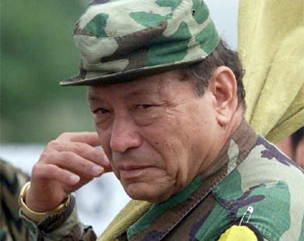

(Pedro Antonio Marín y Marín; Génova, 1930 - Meta, 2008) Guerrillero colombiano, fundador y máximo responsable de las Fuerzas Armadas Revolucionarias de Colombia (FARC). Nacido en Génova, departamento de Quindío, en una familia campesina de ascendencia amerindia, no hay coincidencia en la fecha de su nacimiento: su biografía oficiosa estableció el 12 de mayo de 1930, pero que su padre, Pedro Pablo Marín, la fijaba dos años antes (1928). Primogénito de cinco hermanos, fue a la escuela primaria y abandonó el domicilio familiar cuando tenía trece años.
La familia Marín había tomado partido por los liberales (Partido Liberal o izquierda tradicional) y en contra de los conservadores o terratenientes. Y cuando el 9 de abril de 1948 se produjo el célebre Bogotazo (la insurrección popular que siguió al asesinato del caudillo liberal Jorge Eliécer Gaitán), Pedro Antonio Marín cogió las armas y se unió a otros jóvenes campesinos liberales, primero para defenderse de las bandas armadas de los conservadores (Los Pájaros) y luego para atacarlas.